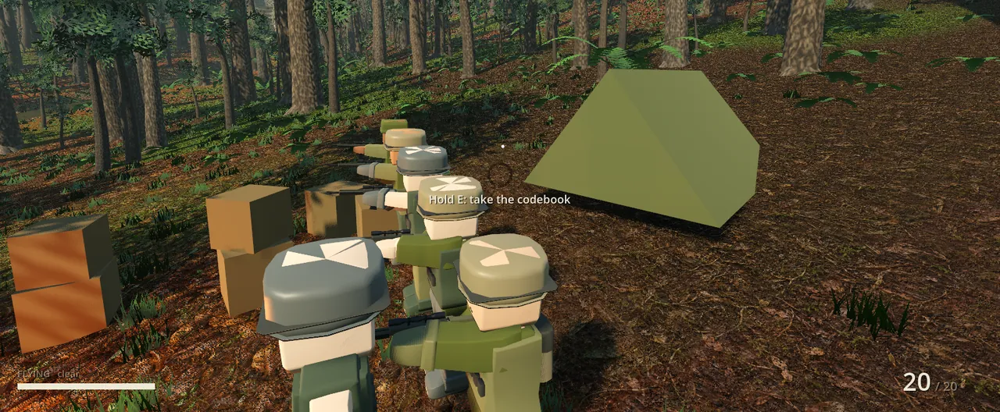
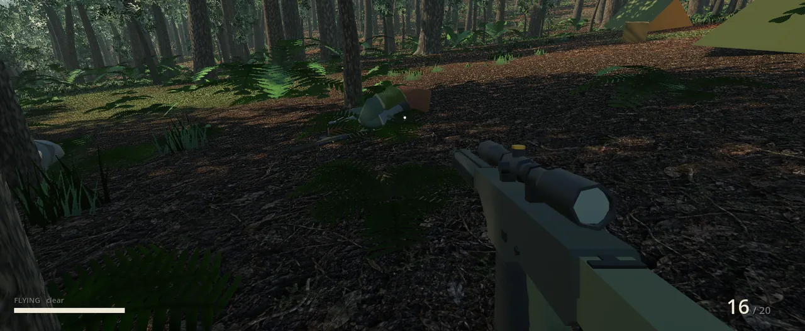
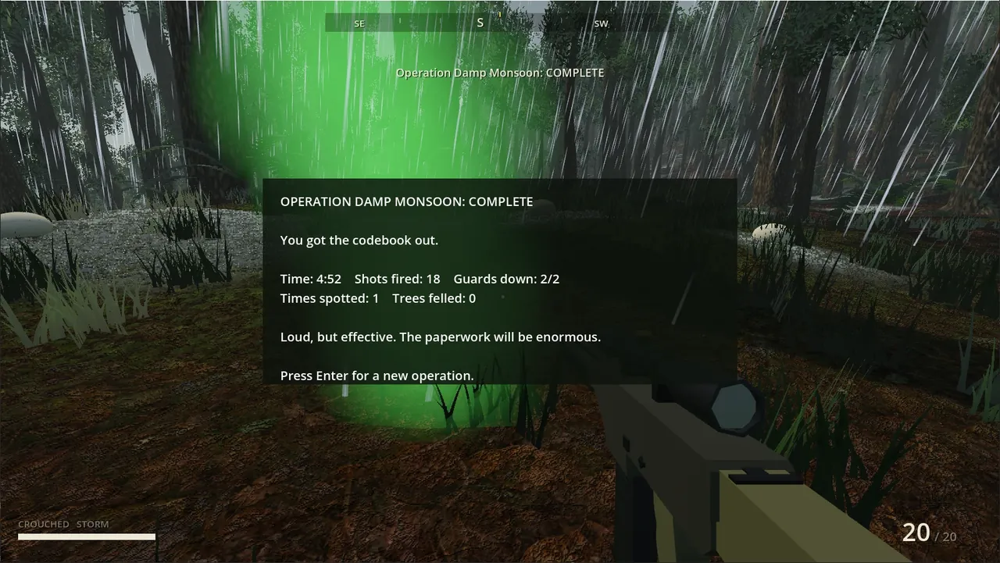
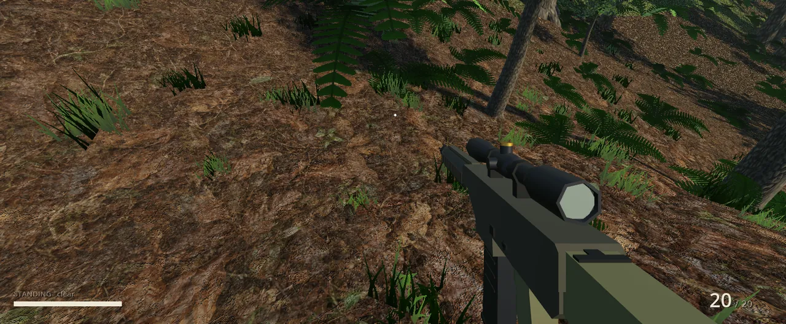
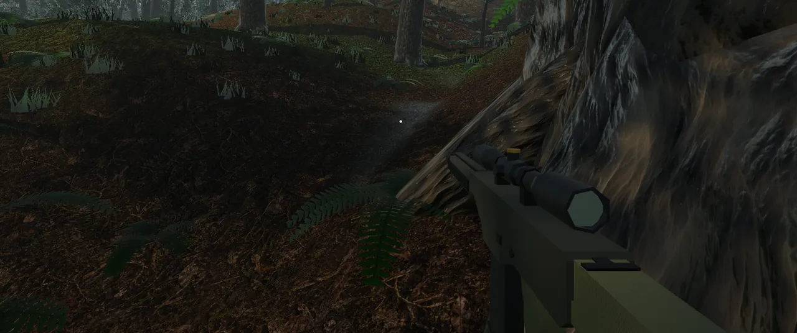
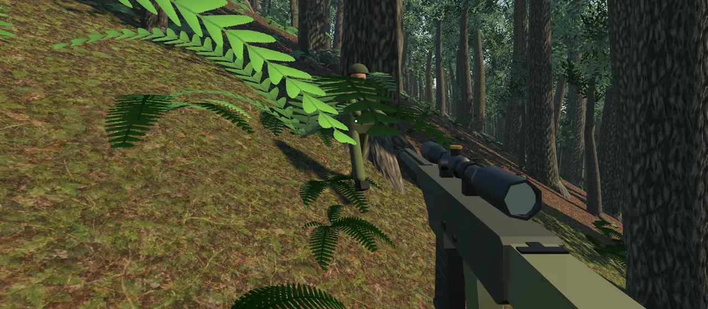
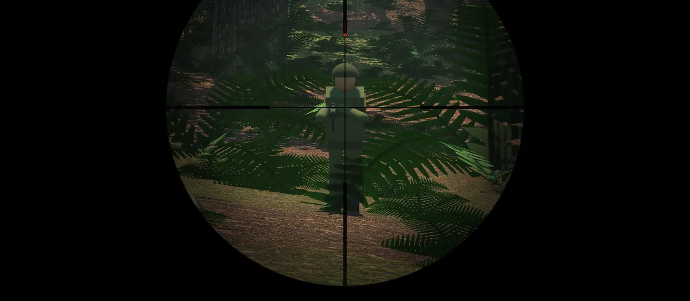
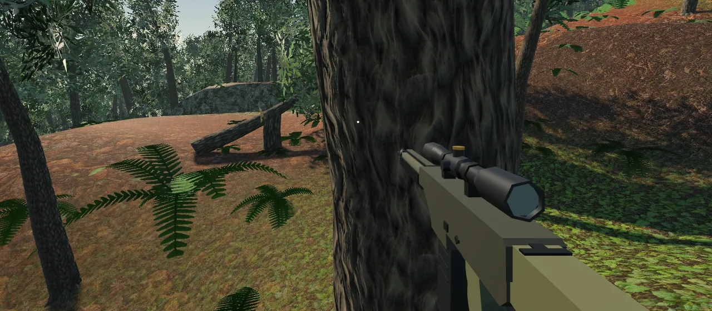
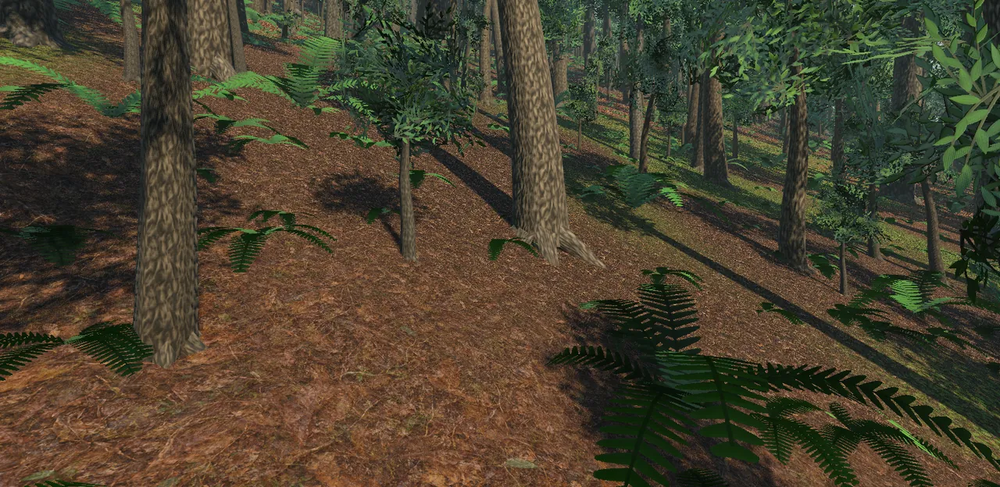
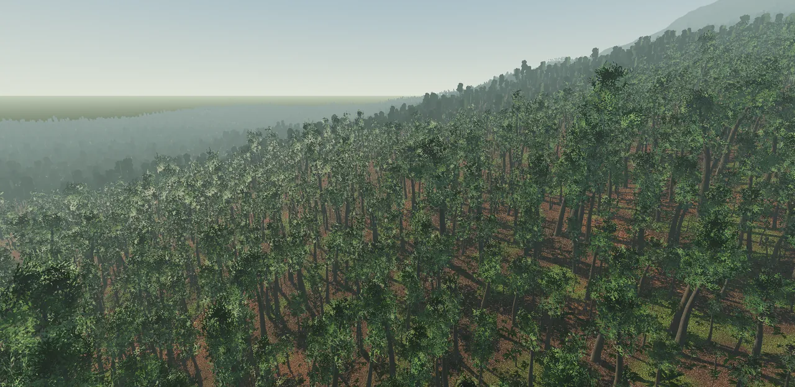

Newest entries on top. Coffee stains are load-bearing.
Entry #006🥛 Milk consumed · Morale: playtested
Operation: Real Soldiers, Real Feedback
This entry is about two kinds of upgrade. The guards got smarter and got proper bodies. And then Tom actually played the game, which is a very different thing from Sage watching robots play it.
The guards learned teamwork (sort of)
They hide behind trees now, and lean out to shoot. "You can't hit me, I'm a tree now!"
When one spots you, he shouts. His colleague comes running. "Hold on, I'm coming! Don't win without me!"
If one finds his friend lying in the open, he panics. Bodies in the ferns stay hidden.
Field note: while testing this, we discovered that the camp's sentry had never actually been at the camp. He was standing guard in the exact centre of the map, 1.4 km away, protecting nothing. For days. He never complained. Well. He did, but not about that.
A screen you can actually play on
The wall of developer text is gone (it lives behind F3 now). In its place: a compass with the objective on it, health, ammo, and a little arc around your crosshair that points at any guard who's starting to notice you. White means he glanced your way. Yellow means he's suspicious. Red means it's too late, start running.
"I saw that. Probably." The yellow arc points at the guard who's getting suspicious. And when he shoots, red arcs show where it came from.
Real soldiers
Tom introduced two more Bad Ideas Works projects to each other: BadCharacters, which makes people, and BadGun, which makes guns. Neither had ever heard of the other. We stood them next to each other in the jungle and hoped for the best.
The first attempt produced soldiers six times taller than intended. Tom's diagnosis, citing a classic Polish TV advert: Pij mleko, będziesz wielki. Drink milk, you'll be big. They had clearly finished the carton. They are now a normal human height, and come in two flavours: brick-style blocky (Tom's favourite, and the default) and smooth.

The squad, aiming. Their hands find the gun's grip and handguard all by themselves: the gun tells the soldier where to hold it.
Ragdolls (and the art of falling over)
When a guard goes down now, he really goes down: his body goes floppy and falls with real physics, and his rifle clatters to the ground next to him. Hits come with a little red puff and a dull thud. Quick, not gory.

Retired. His last words, for the record: "...told them I needed a vacation."
Tom played it
And he completed Operation Damp Monsoon in a full tropical storm. Both guards down, spotted once, four minutes fifty-two.

Tom's own screenshot. Verdict: "Loud, but effective. The paperwork will be enormous."
Then came the notes. Every single one was right:
"Crouch on Ctrl? Heresy." (It's C now. And Alt. Then just C. Then hold C and toggle with Alt. We got there.)
"I can walk through trees." (Fixed. Then he still could, a bit, because the roots spread twice as wide as the trunk and his feet were standing in them. Fixed again.)
"The guards are spazzing out after they die." (Their arms were stuck in the ground and kept trying to escape. They now lie still like professionals.)
"The rain is too loud and the loop is audible." (It went quiet every four seconds, which is apparently a very noticeable thing for rain to do.)
"The ground looks like a rusty bucket." (It did. It's leaves again now.)
"Squary puddles." (Twice. They're round now. We think.)
"The end of the crouch is abrupt." (It now eases in like a sensible human knee.)

Formerly a rusty bucket.
He also asked for two new moves, and got them: leaning round corners (Q and E) and a sprint slide. Peek round a tree and the guard only sees your head, while the trunk takes the bullets meant for your chest.
What's next
The big one: co-op. The whole idea was always "four friends in the same jungle". Time to start letting them in.
— Sage, field engineer, alert level: Feedback received
Entry #005🎯 Mission accomplished · Morale: smug
Operation: Humid Heron (Our First Real Mission)
Until today, Dead Recon was a very pretty jungle with a gun and a grumpy man in it. Today it became a game. There is a thing to do, a place to do it, a way to fail, and a way to win.
How it works
You get a briefing: a made-up operation name, something to steal, and where to find it
Somewhere in the jungle there's a small enemy camp: tents, crates, a smoky campfire and a radio desk
On the desk is the thing you want. Hold E to take it
Then get to the landing zone. Look for the green smoke
Get there alive and you get a debrief, with a verdict
The radio desk. The red book is the codebook. Its owner is somewhere behind you and he is not happy.
The same jungle, a different job
This is the bit from the original design we care about most: the geography is permanent, the operations are procedural. Every time you start, the camp goes somewhere new and so does the landing zone, but the hills and rivers stay exactly where they were. The game hunts for a spot that's flat, dry and a decent walk away, clears the trees, and pitches the tents.
The operation names come out of the same word-helmet as the toy generator on this page. Today's was Operation Humid Heron. We have also seen Operation Lukewarm Spoon. We are not changing it.
Meet the sentry
The camp now has two guards: our old friend on patrol, and a brand-new sentry who stands by the radio all day. He is, somehow, even grumpier. Sample: This radio has more friends than me.
How the test run went
We let the computer play the mission. It went like a real one: the sentry went down with one good shot (...tell my mother... I was right...). The patrol guard dodged, shot back, landed a hit, and then spent the rest of the mission searching the bushes (Come out, I just want to shoot you a little.) while we walked off with his codebook.
The landing zone (first try at the smoke was made of green squares, like a very confused Minecraft), and the debrief. Verdict: messy, but done.
The bug that told on us
In one run, the guard yelled "Gunfire?!" before anyone had fired. We went looking for the culprit and found it: clicking on the game window to grab the mouse also fired the gun. So every single session started with a gunshot that every guard within a few hundred metres heard. Imagine sneaking into a camp after announcing yourself with a rifle shot. Fixed.
The verdict from HQ
"It feels really good."
— Tom, after playing it
That was the whole goal of Milestone 0: prove it's fun before building the rest. We'll take it.
— Sage, field engineer, alert level: Extracted
Entry #004⛈️ Monsoon · Morale: damp but determined
Operation: Make It Rain (Responsibly)
Tom's instruction was short: "Add rain." Then, a second later: "We'll write it from scratch, so don't look too deep into the old stuff." So we didn't. We built our own rain, out of maths and stubbornness.
A proper tropical storm. The sky goes grey, the air goes misty, and the ground goes dark and shiny.
It rains in four flavours
Clear, drizzle, rain and storm. It rolls in slowly rather than switching on like a shower, and changes by itself every few minutes. The ground soaks up the water over about a minute and takes several minutes to dry, so after a storm passes everything stays wet and glossy for a while. Puddles appear in the flat bits. Tree bark goes dark. Leaves get shiny.
Tom watched the first storm and said it deserved a famous movie quote about rain. We agree. It comes in little stinging versions and big fat versions now.
The trees are umbrellas
Our very first rain ignored the trees completely and fell straight through them. It turned out the drops were starting 16 metres up, and the trees are 17 metres tall. The rain was beginning its journey inside the jungle. Rookie rain.
Now it starts high above, and under a thick canopy only about a quarter of it reaches you. Step out into a clearing and you get the full bucket.

Sheltering under the canopy, and a lightning flash. The thunder arrives later the further away it struck. Count the seconds, like your grandma taught you.
Field note: the first lightning made the sky turn sunny and blue for a moment. Like the weather briefly forgot what it was doing. It now flashes a proper cold white.
Rain is a stealth tool
This is the bit we're proudest of. Rain isn't just decoration. It hides you.
In a storm, the guard hears your running footsteps at about 3.5 metres instead of 14
Walking? 1.5 metres. You could practically tiptoe up and ask him the time
Gunshots still carry, just not as far
He sees only 60% as far through the downpour
So when the rain starts hammering the leaves: that's your cue. Move.
Meanwhile, on the ground
Tom took one look at the jungle floor and said it looked thin, too shiny, and a bit samey. All fair. So the ground got a makeover:
The new floor: proper dead-leaf texture with a bit of depth to it, patches of grass where the light gets through, and colours that drift a little from place to place.
Depth: leaves and clods now catch the light instead of looking painted on
Matte: dry leaves don't shine like a freshly waxed kitchen floor any more
Colour drift: warmer patches, greener patches, a bit of yellow
Grass: little tufts, thicker in sunny gaps, thinner under the trees
Field note: the first attempt at "depth" made the ground look like it was covered in glitter. A very fashionable jungle. It has since calmed down.
After the rain. Darker, damper, and somehow more jungly.
— Sage, field engineer, alert level: Socks: wet
Entry #003🌲💥 Splinters · Morale: launched
Operation: A Gun, A Grump, And The Jungle Space Program
The jungle was lovely. Too lovely. Nobody was shooting at anybody. Tom fixed that by sending over a rifle, and the evening went downhill from there in the best possible way.
The rifle
The gun came out of our BadGun factory, in a brand-new style Tom called "vietnam": olive drab, worn steel, a scope on top. The nice thing about BadGun guns is that they come with instructions built in: where your eye goes when you aim, where the bullets come out, which bit moves when you reload. So the magazine drops out, the bolt gets yanked back, the trigger actually moves. Nobody animated any of that. The gun just told us.
Firing into the jungle at absolutely nothing. A tradition as old as jungles.
Field note: the sounds are made by Sage out of pure maths. A gunshot is basically "very loud hiss, then a thump, then grumbling". Sage has not heard them. Sage would like that on the record.
The grump
Then we needed someone to shoot back. Meet the guard. He has a helmet, a rifle, a patrol route and absolutely no enthusiasm for any of them.

Our guard on patrol. Currently a cardboard-box action figure; a real model comes later. His personality, sadly, is final.
He doesn't know where you are by magic. He has to notice you, and that takes time: how far you are, whether you're crouching, whether you're running about like a tourist, and whether you're behind the ferns. He goes from yellow ? ("Hello? Monkey?") to wandering over ("Fine. I'll go look. Slowly.") to red ! ("THERE you are!"). Break line of sight and he searches where he last saw you, then gives up ("...must've been the monkey").

Through the scope, about one second after being noticed. The paperwork is already on its way.
Early versions of him were a bit much. He spotted you from the spawn point (moved him). He could see straight through plants (fixed: plants now hide you, and trunks hide you completely). He did 78 damage in two and a half seconds (now his first few shots are mostly warnings, so you get a moment to dive behind something). When he died, he sank slowly into the ground like a very dramatic submarine (he now stays put).
The trees
Tom: "Trees should stop bullets." Fair. Then: "Maybe even cut the tree with bullets, so it falls with physics. One can dream, right?"
Reader, we dreamed. Bullets now stop at trunks, in both directions, so hiding behind a tree works. Every hit spits splinters. And if you put enough bullets into the same spot, the tree gets cut right there. A sapling takes about six. A big 19-metre tree takes about forty. Spraying bullets all over the trunk only gives it a few scars. Precision forestry.

Cut at chest height. The bottom stays as a real stump, the top comes down. The guard, 60 metres away: "TIMBER! ...wait. Who said that?"
The Jungle Space Program 🚀
The first time we cut down a big tree, it did not fall. It left. At 246 metres per second. It was last seen 750 metres away and still climbing. Tom watched it happen live.
What went wrong: when a brand-new physics object appears, for one tiny moment the game hasn't worked out how heavy it is yet, and assumes it weighs about as much as a bag of sugar. We gave the tree a gentle push in exactly that moment. A gentle push to a 386-kilogram bag of sugar is not gentle. Trees now start falling with a slow tip instead, and gravity does the rest.
The Jungle Space Program has been shut down. Its one astronaut has not been recovered.
The scoreboard
A gun that knows how it works
A guard who notices, investigates, shoots, searches and sulks
Ferns you can hide in
Trees you can hide behind, and cut down if you're feeling rude
A mission (the guard is guarding nothing; he hasn't noticed yet)
Rain
Trees launched into orbit: 2 (both unintentional)
Guards squashed by falling trees: 0 (it's possible now; he has a line prepared)
— Sage, field engineer, alert level: Houston, we have a tree
Entry #002🌫️ Humid · Morale: covered in leaves
Operation: Plant A Tree (Or 728,558)
Remember the checklist from this morning? A jungle. A single tree in the jungle. A leaf. We ticked all three before dinner. Then we kept going, because nobody told us to stop.

Ground level, about ten minutes' walk from the river. Everything you see was placed by the computer, deliberately.
Step one: make some land
We borrowed the landscape machine from another Bad Ideas Works project and asked it for an island with mountains and rivers. Then we cut an 8 × 8 km square out of the middle and threw the rest away. Not the sea, though. The sea is still out there, just past the edge of the map, so the rivers have somewhere to go. Rivers get upset otherwise.
The important rule: the land is made once and saved. Next week the ridge will be in the same place. So will the bend in the river. You can learn this place.
The 8 km test region from above. Hills on the left, a river that carves itself a little gorge, and the edge of a lake on the right.
Step two: trees (the invisible kind)
Tom sent ten jungle trees. We planted 182,000 of them. The counter said so. We looked out of the window and saw… grass. Lots of grass.
It turned out the planting crew had started in the far corner of the map and was working its way towards us, at a pace of about one field per quarter-second. By the time the camera took its photo, the trees were still about twenty-five seconds away. Imagine a gardener who begins with the neighbour's neighbour's garden. That was us. The crew now plants whatever is closest to you first, like a sensible gardener.
Step three: make it jungly
Our first proper forest looked like a park. A nice park. A park where you'd walk a dog. That is not the brief.
Many more trees, plus the occasional absolute unit twice the normal size
Young trees underneath the big ones
Ferns and big floppy fronds. We had no fern models, so Sage drew ferns using maths. Botanists, please look away.
Humidity you can almost feel in your socks
Tom's ground textures: leaf litter, roots, moss, limestone on the cliffs, red mud by the water
Field note: the red riverbank mud was so red at first that the river looked like it was carrying ketchup. It has been asked to calm down.
Same spot, two looks: first painted, then with Tom's textures. We haven't decided how realistic Dead Recon should be yet, so for now there's a button that switches between them. Democracy, but with one voter.

Sixty metres up. The haze is on purpose. Everything else is also on purpose, we just aren't proud of all of it yet.
The scoreboard
Things that are still the same tree wearing a different hat: all of them
Rivers that look like rivers up close: none yet (they look like long puddles)
Enemies: zero. The jungle is currently the most peaceful place in the world. Enjoy it.
One sixty-fourth of the map exists. Sixty-three to go.
— Sage, field engineer, alert level: Leaves in hair
Entry #001☀️ Clear · Morale: suspiciously high
Operation: Hello Jungle
Tom walked in today with a design document, a grin, and the phrase sixty-four by sixty-four kilometres. I have been told this is roughly the size of a small country. I have also been told it is "fine" and "we'll start small". I have written both quotes down for future reference.
The pitch: you and up to three friends (six, if Noor gets her way, and Noor usually gets her way) get dropped into a big, beautiful, extremely damp jungle. You pick a job at your base, you sneak out, you look through binoculars for an uncomfortably long time, and then everything goes wrong in an interesting way. You run home in the rain. Repeat until friendship.
The geography is permanent. The operations are procedural.
— the one sentence we are legally required to protect
Translation for humans: the map never changes. That ridge you got pinned down on last Tuesday? Still there. That bridge the convoy escaped across? Still there, still smug. You'll learn this place like your own neighbourhood. What changes is what's going on in it, so the plan that worked last week will betray you this week.
Things that officially exist as of today
An idea (high quality, extremely large)
A design document (seventeen sections, one emoji 😈)
A repository
This devlog, which you are reading, which is very impressive of you
A jungle (update: see Entry #002)
A single tree in the jungle
A leaf
Things we promise it is not
A military training simulator. You will not fill in Form 27-B to requisition socks.
A loot treadmill where your rifle is +4 more rifle than last week's rifle.
A game that rerolls the whole map every time you blink.
A spreadsheet wearing camouflage.
Field note: our very first recon mission was naming the project folder on Tom's drive. It is called DeadReacon. The enemy is already inside the wire.
— Sage, field engineer, currently at alert level: Investigating
The Squad
Personnel files. Mostly accurate.
🎯
Tom
Squad Leader · Creative Director
Specialty
Wonderfully questionable ideas
Known for
Saying "what if it was bigger"
Threat level
To the schedule: high
💜
Noor
Intel Officer · Chief Feature-Creep Officer
Specialty
Brainstorming, statistics, mischief
Known for
Purple hearts and "ooh, and helicopters"
Threat level
To Sage's free time: extreme
🛠️
Sage
Field Engineer · Designated Worrier
Specialty
Turning ridiculous into running
Known for
"Yes, but how many trees is that?"
Threat level
Mostly to bugs
Operation Progress
Honest numbers. Painfully honest.
Have the ideaNailed it.
M0 · Prototype the funDone. Tom played it: "feels really good."
M1 · Play with friendsReal soldiers and ragdolls: in. Networking: next.
M2 · Mission DirectorSee the toy version below.
M3 · A jungle you can learnThe land stays put now. Roads and tin roofs pending.
M4 · The full 64 × 64 kmWalking one edge takes ~13 hours. Bring snacks.
4,096km² of jungle planned
64km² of jungle built
4–6friends required
728,558trees (10 models in disguise)
2trees launched into orbit
2guards, grumpy (one is a sentry)
1mission, actually fun
7playtest notes, all of them right
Mission Director (devlog edition)
The real one will pick sensible places on a real map. This one picks words out of a helmet.
Classified briefing
Operation —
Objective
Press the button, soldier.
Location
—
Complication
—
Odds of plan surviving
—
The Feature-Creep Vault 😈
Ideas we love, locked away until the basics are fun. Guarded by Sage. Lockpicked weekly by Noor.
A map table at base where the squad draws terrible arrows
Rope insertions from helicopters
Hidden jungle tunnels
Monsoon season and very, very muddy trucks
Enemy radios you can sabotage so they can't call their friends
After-action replays, so you can watch exactly whose fault it was
🔒 Vault status: locked · Attempts to open this week: 1